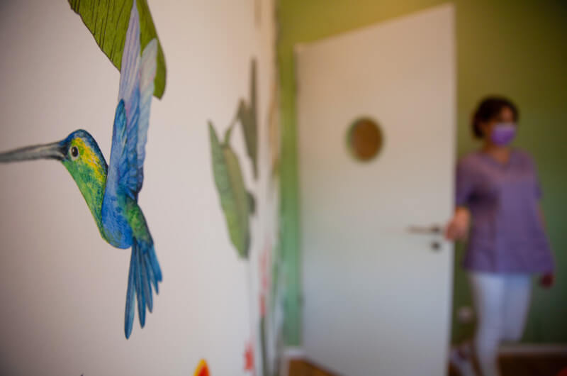

Jobs bei uns
Du liebst die lebendige Arbeit mit Kindern? Dann passt du zu uns.
ZFA (m/w/d) in Vollzeit
Allrounder:in mit 36 Stunden pro Woche – ab sofort
Dich erwarten Rezeption (ohne Abrechnung), Prophylaxe und Stuhlassistenz. Auch wenn du gerade noch in der Ausbildung bist, aus einem anderen Bereich wie Hotel oder Verwaltung kommst oder als Elternteil Teilzeit suchst: Melde dich gern!
Das bieten wir
- Ein freundliches, fröhliches Team
- Übertarifliche Bezahlung mit transparentem Gehaltssystem
- Eine neue, helle Praxis ohne Papierakten
- Mo–Do bis 17:15 Uhr, Freitag bis 13:30 Uhr
- Strukturierte Einarbeitung und Entwicklungsmöglichkeiten
- Flache Hierarchien
- Teilzeitmodelle für Eltern

So bewirbst du dich
Schick deine Bewerbung an Frau Schilbach – auch Initiativbewerbungen sind willkommen. Du hast Fragen? Ruf an oder hinterlass deine Nummer, wir rufen zurück.
schilbach@kinderzahnarztpraxis-hoheluft.de
040 40 11 321 0